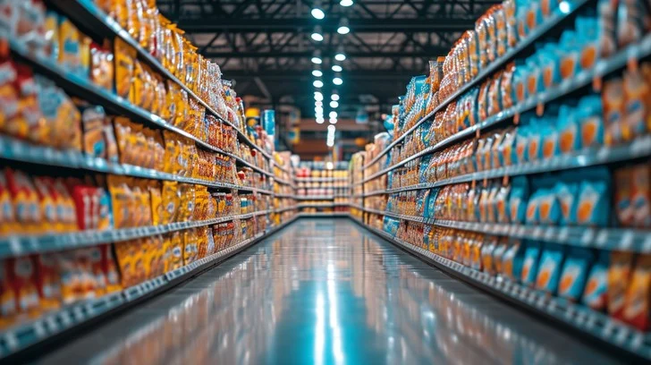
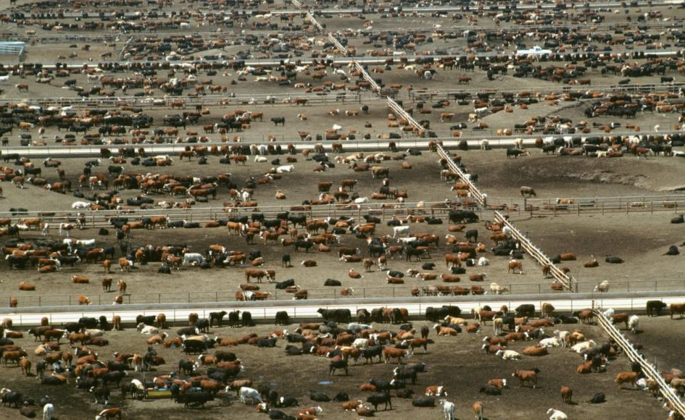
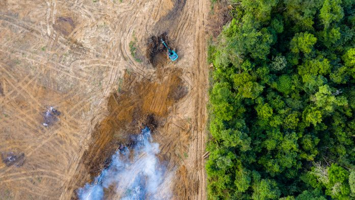

Despite being one of the largest contributors to greenhouse gas emissions, a major driver of deforestation and biodiversity loss, and a significant source of pollution through practices like food loss, waste, and unsustainable agricultural methods, food systems often aren't considered when people think about tackling climate change. The global food system—spanning from production and processing to distribution and consumption—has far-reaching environmental impacts that many overlook. From the amount of land used for agriculture to the chemicals that leach into our soil and waterways, the way we grow, distribute, and consume food has both direct and indirect effects on the health of our planet.
By shifting how we produce, distribute, and consume food, we can unlock powerful opportunities to reduce emissions, restore ecosystems, and build a more sustainable future.on and storage to transport — threatening the global accessibility and affordability of healthy diets.
Inadequate diets contribute further to detrimental human and planetary health impacts. At the same time, the way food is grown, processed, and packaged is having immense adverse effects — from deforestation and loss of biodiversity — on the environment, and depleting finite natural resources, further accelerating climate change.


It is essential to recognize the role vital food systems play in preventing potential future climate catastrophes. The current inaction global policymakers are displaying towards transitioning food systems for climate mitigation and adaptation is both problematic and alarming.
